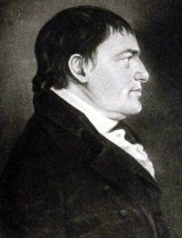

by
Stefan Bielinski
Abraham G. Lansing was born in December 1756. He was the son of Gerrit and his second wife, Jannetje Waters Lansing. He grew up a younger child in the large combined Market Street family of a well-known merchant and gunsmith. He was the brother of Chancellor John Lansing. To prevent confusion with similarly named kin, he was consistently known as "Abraham G. Lansing."
Abraham came of age during the American Revolution. He served in the militia and was appointed firemaster in 1776. But like his older brother, his clerical abilities would make him more useful in office work. Throughout the war years, he appears to have been involved in the payment of accounts for New York State. Afterwards, he was among those who were accorded a land bounty right for service in conjunction with the Albany militia regiment.
After announcing marriage plans to Catharina Van Deusen in August 1778, instead he wed Albany native Susanna Yates at the Schaghticoke Dutch church in 1779. She was the daughter of Patriot leader Abraham Yates, Jr. Their thirteen children were born between 1780 and 1808 and baptized in the Albany Dutch church where both parents were members.
Over the next two decades, Abraham was closely associated with his prominent father-in-law - serving as Yates's deputy in the Loan Office in 1780 and most likely in the Post Office as well. During the 1780s, he was in regular correspondence with Yates. Lansing's large and growing family lived with the Yateses until Abraham's death in 1796. After the war, he entered business and was able to acquire investment property in and beyond Albany.
During the machinations surrounding the writing and adoption of the United States Constitution, Abraham G. Lansing was the correspondent of his antifederalist father-in-law while also being solicited to help sway the thoughts of his delegate older brother. Although not infrequently sought out by both sides (and referenced by now several generations of "ratification" scholars), we are unable to offer anything definitive regarding his own feelings on the subject.
However, this subject was primarily an officeholder and public servant. Abraham G. Lansing served as Albany County Surrogate (1787-1808), Treasurer of New York State (1803-12), and as a trustee and board member of a number of community-based organizations. He served on the New York State Board of Regents and as the private secretary to Governor Morgan Lewis as well.
Abraham G. Lansing was a prominent Albany personage of the early nineteenth century - inheriting the large new house built at what became 358 North Market Street following the death of his father-in-law in 1796. However, the census for 1800, configured his residence in the second ward.
In 1813, the first city directory listed the fifty-seven-year-old mainliner as a resident of 94 Market Street. At that time, his was one of nineteen Lansing-named households in the city. At least thru 1820, he resided at that main street address.
A contemporary characterized him as "a man of sound sense and vigorous tone of mind; rough and somewhat abrupt in his manner, but upright, frank, and fearless in conduct and in character." He died in September 1834. His will passed probate a month later. His remains are said to be at Albany Rural Cemetery.
notes
Abraham G. Lansing is noted several times in Random Recollections, including a detailed sketch on page 64. The portrait is from a currently indistinct resource! The image shown here has been appropriated from his Wikipedia article.
Constitution: We have consciously avoided this topic as we have nothing unique to offer here. Our efforts focus on his Albany Context.
A more extensive account of his offspring and other family/career
matters can be found online.
In fact, that page's root
site, which I encountered more than a decade ago, continues to evolve
and stands as an unparalleled resource for many valuable things. I have
admired and have been motivated by it for many years. Just wow!
 Sources: The life of Abraham G. Lansing
is CAP biography number 3695. This profile is
derived chiefly from family and community-based
resources. Wikipedia
article.
Sources: The life of Abraham G. Lansing
is CAP biography number 3695. This profile is
derived chiefly from family and community-based
resources. Wikipedia
article.
first posted 8/20/02; recast and reconstituted 7/21/17